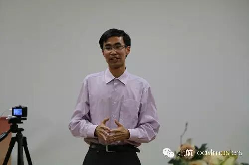
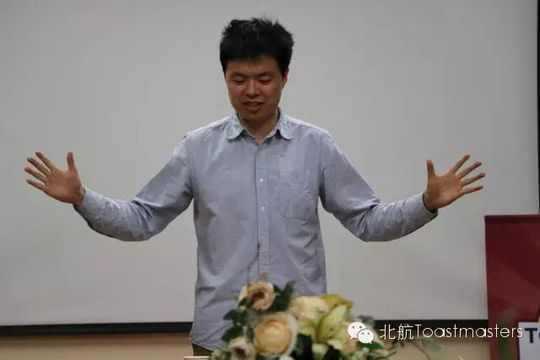

Fiona
从沉默的萌新到笑容常驻的舞台主持人，一步步把头马走成自己成长的注脚。
会员活跃 2014–2017出现 15 次 · 15 篇2 场演讲
Fiona 是北航头马的"老成员"——早在2014年的会员成长榜（Member Growth）上她的名字就已在列，只是那时她还是一个尚未承担任何角色、安静观望的新人。她的头马旅程，是一段从台下慢慢走到台上、再走到主持台的真实成长。
2016年春天，在导师 Crystal 的带领下，可爱的 Fiona 终于在第133次例会献上了破冰演讲 CC1《My story with food》，讲述自己与食物的故事；同一时期她也开始在联合例会里担任 Ah-counter 等点评官职，承担起会议的支持角色。此后她频繁活跃在即兴演讲环节，无论是带高中同学 Cristina、和 Crystal 组成"双美组合"，还是在春季中文比赛里聊"回到高中珍惜友谊"，她总是带着笑、自然松弛地出现在每一次互动里。纪要里那句"她总是对观众微笑"，几乎成了她的标志。
到了2017年，Fiona 的身份明显升级：她接连担任第165、171、176次例会的 Toastmaster（主持人），从"Spring Festival""Love"到"Root of Exhaustion"，由她串起整场会议的节奏；同时她交出了 CC2《Grown-up Essence》，分享自己关于"长大"的体悟。从只敢坐在台下的新人，到能稳稳掌控全场的主持人，Fiona 用几年时间，把头马的舞台真正变成了属于自己的舞台。
里程碑
- 2014-04-08 出现在会员成长榜 ↗在Member Growth名单中位列第14，承担角色数为0，是尚在观望的早期新人。
- 2016-04-15 破冰首秀 CC1 ↗在第133次例会献上破冰演讲《My story with food》，被称作'我们可爱的Fiona'，是Crystal的首位mentee。
- 2017-04-07 完成 CC2 演讲 ↗在第169次例会发表《Grown-up Essence》，讲述对成长的理解。
- 2017-06-09 主持第176次例会 ↗担任'Root of Exhaustion'主题例会的Toastmaster，成长为能掌控全场的主持人。
闯关之路 · Competent Communication
✓
CC1
破冰
✓
CC2
组织你的演讲
CC3
明确目标
CC4
怎么说
CC5
肢体在说话
CC6
声音的变化
CC7
研究你的主题
CC8
善用视觉辅助
CC9
以理服人
CC10
激励听众
做过的演讲 · 2 场
破冰演讲，作为新成员分享自己与食物、与喜爱美食之间的故事。
分享自己关于成长本质的思考与亲身经历，准备充分、笑对观众。
担任过的会议角色
Toastmaster主持×3即兴主持TTM×2点评官/Ah-counter即兴演讲者×6
为俱乐部做的事
- 多次担任例会Toastmaster主持人（165/171/176次），负责把控整场会议节奏与气氛
- 担任即兴演讲主持TTM（121/165次），设计并引导即兴话题环节
- 在联合例会中担任Ah-counter等点评官职，服务会议运转
- 长期活跃于即兴演讲环节，乐于与新嘉宾、同伴组队互动，带动现场气氛
- 以破冰CC1、CC2两篇备稿演讲持续完成自身演讲进阶
照片墙 · 时间线
共 30 帧，其中 5 帧已用人脸识别确认是本人（带 ✓）。
 ✓
✓ ✓
✓ ✓
✓ ✓
✓ ✓
✓








完整足迹 · 15 次出现（点开，每条可跳转原文）
- 2014-04-08成长统计:担任角色0次
- 2015-11-17第118次 · 即兴演讲，分享印象最深的网购经历
- 2015-12-01第120次 · 与Gastby搭档即兴演讲
- 2015-12-02第121次 · 担任即兴演讲主持TTM
- 2016-04-13第132次 · 担任132次会议Ah-counter哼哈官
- 2016-04-14第133次 · 新会员做CC1首演《My story with food》
- 2017-03-03第165次 · 预告担任165次例会总主持人
- 2017-03-07第165次 · 与Crystal搭档即兴演讲讨压岁钱情景
- 2017-03-17第166次 · 比赛即兴演讲称想回到高中珍惜友谊
- 2017-03-19第167次 · 带高中同学Cristina上台做即兴对话
- 2017-04-06第169次 · 预告做CC2演讲Grown-up essence
- 2017-04-08第169次 · 做CC2演讲分享成长经历
- 2017-04-20第171次 · 担任会议主持人(Toastmaster)
- 2017-06-06第175次 · 回答情感洁癖话题
- 2017-06-08第176次 · Root of Exhaustion@BeihangTMC 176th Meet
“Fiona have been prepareing enough for her speech, and she always smileing to the audience.”